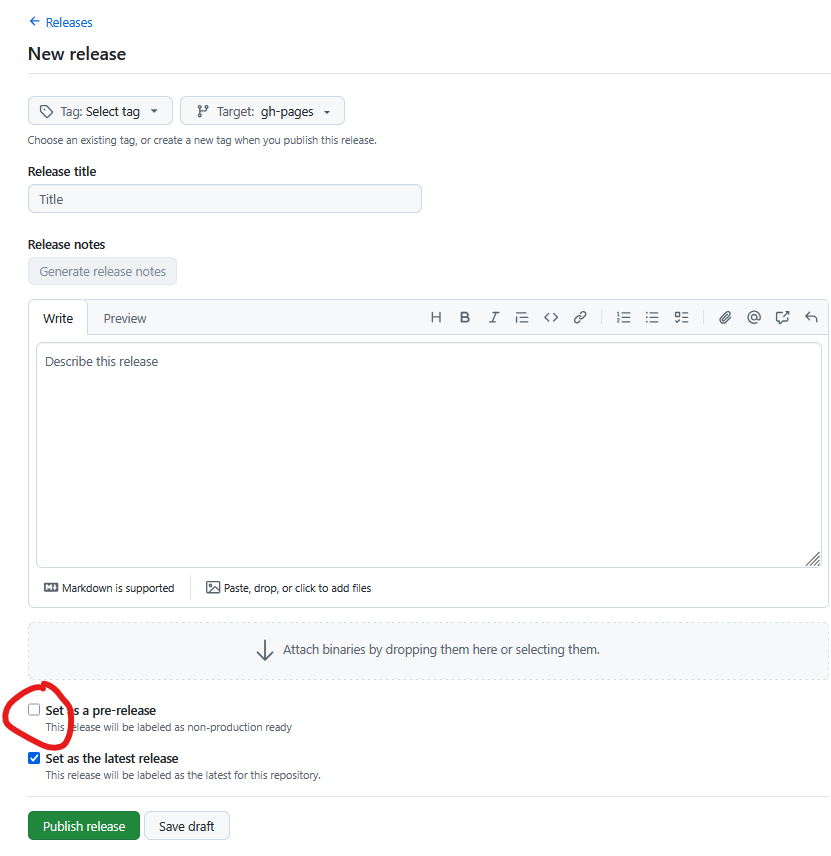

Publiceren van een ReSpec document
Dit hoofdstuk beschrijft hoe je een ReSpec document publiceert op: https://docs.geostandaarden.nl en gebeurt in de volgende stappen:
- Geef het document de juiste status en vul de bijbehorende velden in.
- Controleer of het document klaar is voor publicatie.
- Check het document in op GitHub.
- Druk in GitHub op de release knop.
- Na succesvolle publicatie:
- zet de
specStatusinconfig.jsterug op"wv" - Vul
previousMaturitymet de gepubliceerdespecStatus - Vul
previousPublishDatein met de datumpublishDate
- zet de
Stap 4 zorgt voor een pull request op https://github.com/Geonovum/docs.geostandaarden.nl. Eén van de reviewers Frank Terpstra, Linda van den Brink of Wilko Quak checkt de publicatie. Als alles goed is bevonden wordt het document vervolgens automatisch gepubliceerd op docs.geostandaarden.nl
Geef het document de juiste status en vul de bijbehorende velden in.
Consultatieversie (cv)
Controleer de volgende velden in js/config.js:
specStatus:`"cv"publishDate: moet ingevuld zijn met de datum van publicatie van de."jjjj-mm-dd"shortname: moet ingevuld zijn.- Als er al eerder een versie gepubliceerd is moet daarnaar verwezen worden via het invullen van
PreviousmaturityenpreviousPublishDate.
Vastellingsversie versie (vv)
- specStatus: "vv"
- publishDate: moet ingevuld zijn met de datum van publicatie van de consultatieversie. "jjjj-mm-dd",
- Shortname: moet ingevuld zijn met korte naam voor het document. Dit wordt onderdeel van de URL. Moet uniek zijn binnen pubdomain (afgezien van versies).
- Als er al eerder een versie gepubliceerd is moet daarnaar verwezen worden via het invullen van
PreviousmaturityenpreviousPublishDate.
Definitieve versie (def)
- specStatus: "def",
- publishDate: de publicatiedatum van de definitieve versie. "jjjj-mm-dd",
- Als er al eerder een versie gepubliceerd is moet daarnaar verwezen worden via het invullen van
PreviousmaturityenpreviousPublishDate.
Noot: Automatisch publiceren werkt alleen in Github repositories waar, conform de werkwijze, maar één ReSpec document in staat. Als er meerdere Respec documenten in een repository staan kun je handmatig publiceren.
Is het document publicatieklaar?
Publicatie is geautomatiseerd als aan de volgende voorwaarden is voldaan:
- de folderstructuur van de repository waarin het ReSpec document staat, moet conform de Geonovum ReSpec template zijn
- dat wil zeggen,
index.htmlin de root folder,config.jsin/jsfolder, afbeeldingen in/mediaen/of/data/Imagesfolder;
- dat wil zeggen,
- de github repository mag maar één ReSpec document bevatten.
In het proces wordt op het volgende gecontroleerd:
- Controle op WCAG (web toegankelijkheids-) regels. Bij het pushen van een ReSpec document naar GitHub wordt automatisch een WCAG rapport geschreven. Dit is te vinden onder 'Actions'. Kies hier de commit die je gedaan hebt en je ziet daar 'build/WCAG Accessibility Check'). Deze controle checkt ook de HTML.
- Controle op Broken links. Bij het pushen van een ReSpec document naar GitHub wordt automatisch op broken links gecontroleerd. Dit is te vinden onder 'Actions'. Kies hier de commit die je gedaan hebt en je ziet daar 'Build/Link validation').
Publiceer via een GitHub release
De automatische workflow gaat aan het werk bij elke keer dat je een Release aanmaakt in github. De stappen om een ReSpec document te publiceren naar docs.geostandaarden.nl via de workflow zijn als volgt:
- Zorg dat het document helemaal goed klaarstaat in je eigen repository
- Er wordt een HTML snapshot aangemaakt via ReSpec
- (optioneel) PDF wordt gegenereerd indien je dit geconfigureerd hebt
- WCAG (web toegankelijkheidseisen) en HTML worden gevalideerd
- Links worden gecontroleerd
- Bekijk de resultaten van de controles via het tabblad Actions van de repository. Als er fouten gevonden zijn, los deze dan op en herhaal stap 1, of vraag om hulp.
- Maak een Release aan in GitHub:
- Ga naar Releases.
- Kies 'Draft a new release'
- Als je het vinkje 'Set as a pre-release' aanzet wordt het document automatisch als test gepubliceer op https://test.docs.geostandaarden.nl/
- Bij een echte release een Pull Request (PR) aangemaakt naar: Geonovum/docs.geostandaarden.nl
- Na goedkeuring van de PR (door Wilko, Frank of Linda) wordt het document gepubliceerd op: https://docs.geostandaarden.nl/

Meer documentatie staat in de readme van NL-ReSpec-template.
Configureren van de automatische workflow
Bij het maken van een nieuw ReSpec document via de template wordt de workflow automatisch geïnstalleerd. In github repositories die al een ReSpec document hadden voordat de nieuwe publicatieworkflow werd geïntroduceerd, is de workflow meestal ook al geinstalleerd. Alle actieve repositories waar een 'js/config.js' in gevonden is, hebben de nieuwe workflow gekregen.
Je kan controleren of de workflow is geïnstalleerd door bovenin de README.md in je repository te kijken. Hier moet in staan:
Deze repository is automatisch bijgewerkt naar de nieuwste workflow. Voor vragen, neem contact op met Linda van den Brink of Wilko Quak. Als je een nieuwe publicatie wilt starten, lees dan eerst de instructies in de README van de NL-ReSpec-template: https://github.com/Geonovum/NL-ReSpec-template.
Als de workflow niet automatisch is geïnstalleerd, kun je dit zelf doen. Dit is een eenmalige stap. Mocht dit niet lukken, dan kan Linda, Wilko of Matthijs erbij helpen:
Zorg dat Git is geïnstalleerd en beschikbaar is in je terminal
- Open de Opdrachtprompt:
- ➜ Druk op de Windows-knop, typ
cmd, druk op Enter
- ➜ Druk op de Windows-knop, typ
- Typ vervolgens in de cmd terminal:
git --version- Zie je een versie zoals
git version 2.x.x, dan is alles goed.
- Krijg je een foutmelding zoals
'git' is not recognized as an internal or external command, dan moet je Git nog installeren via: https://git-scm.com/downloads/win
Vervolg, na installatie van git
- Navigeer naar de repository in Verkenner
- Open de map waarin de repository staat
- Shift + rechter muisklik in een lege ruimte in de map
- Kies "PowerShell-venster hier openen" of "Open in terminal"
- Download en voer het script uit. Kopieer en plak de volgende regels in PowerShell, voer ze om beuren uit:
curl -o replace_workflow-local.ps1 https://raw.githubusercontent.com/Geonovum/NL-ReSpec-template/main/replace_workflow-local.ps1Set-ExecutionPolicy -Scope Process -ExecutionPolicy Bypass.\replace_workflow-local.ps1
- Als er geen errors verschijnen is dit gelukt. Je kunt dit checken door README.md te openen: als het goed is staat hier nu bovenin een tekst die begint met "Deze repository is automatisch bijgewerkt..."
Tenslotte
- Verwijder het bestand "replace_workflow-local.ps1"
'Handmatig' publiceren van respec document.
Het ‘handmatige’ publicatieproces voor docs.geostandaarden.nl is als volgt:
- Docs.geostandaarden.nl is een mirror van: https://github.com/Geonovum/docs.geostandaarden.nl/
- Handmatige publicaie bestaat nu uit het rechtstreeks wijzigen van dit reopsitory. Maak in dit geval een pull request voor het repository en laat het goedkeuren zoals hierboven beschreven.
- In noodgevallen kunnen beheerders ook zonder pull request wijzigingen doorvoeren. In dat geval moet
handmatig gesynchroniseerd worden. Dat kan via https://github.com/Geonovum/docs.geostandaarden.nl/actions/workflows/deploy.yml . Hier zie je een knopje: ‘Run workflow’.